Text tab (Dimension Style and Dimension Properties)
The Text page sets the text options for dimensions and for PMI elements. It is shared by the Dimension Style dialog box and the Dimension Properties dialog box.
- Text
-
Sets text options for a dimension.
- Font
-
Sets the font type for the dimension text.
- Symbol font
-
Sets the symbol font to be the source for special characters used in annotations and dimensions. Available options are the Solid Edge ISO Symbols font and the Solid Edge ANSI Symbols font.
Note:Symbol font must be specified in the template for each dimension style. The dimension style, in turn, specifies the symbol font for both annotations and dimensions.
- Font style
-
Specifies the font style to use for the text in a dimension.
- Font size
-
Sets the text size for a selected 2D dimension or 3D PMI element.
- Orientation
-
Sets the orientation of the dimension text with respect to the dimension line. You can set the orientation to horizontal, vertical, perpendicular, or parallel.
- Position
-
Sets the position where text appears in relation to the base line. The base line is an imaginary horizontal line directly beneath a line of text.
- Fill text with background color
-
Fills the text with the current background color.
- Override pulled-out text
-
Specifies that text which is pulled off or out of a linear or angular dimension line will be displayed according to the override Orientation and Position settings, below.
- Orientation
-
Sets the orientation of the dimension text when it is pulled away from the dimension line. You can set the orientation to horizontal, vertical, perpendicular, or parallel with respect to the dimension line.
- Position
-
Sets the position of dimension text when it is pulled away from the dimension line. You can set the position to above (A) or embedded (B) with respect to the leader line that shows the relationship between the text and the dimension.
(A)
(B)
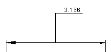
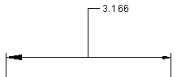
- Override pulled-out text 2
-
Specifies the orientation and position for text that is pulled along the dimension line and outside the projection lines or the terminators.
- Orientation
-
Sets the orientation of the dimension text when it is pulled outside the projection lines or the terminators.
You can set the orientation to horizontal, vertical, perpendicular, or parallel with respect to the dimension line.
- Position
-
Sets the position of dimension text when it is pulled outside the projection lines or outside the terminators.
You can set the position to above or embedded with respect to the leader line that shows the relationship between the text and the dimension.
The following example shows the difference between using the Override pulled out text 2 option (A) versus the Override pulled out text option (B).
(A)
(B)
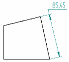
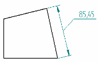
- Tolerance Text
-
Sets options for the tolerance text on dimensions.
- Size
-
Sets the size of the tolerance text for dimensions that are placed with the Dimension Type option set to Tolerance. The value is a ratio of the dimension text size. For example, if you enter .5, the size of the text for the tolerance value is half the size of the dimension text.
- Hole/Shaft
-
Specifies the layout (horizontal or vertical) and separator (slash, horizontal line, or space) for class fit hole/shaft dimensions with tolerance.
Use these options
To get this layout
Separator
Vertical
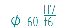
Space
Vertical
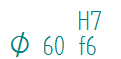
Slash
Horizontal
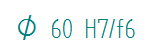
- Limit arrangement
-
Sets the text arrangement on limit dimensions.
- Position
-
Specifies the tolerance position with respect to the dimension text. This option is available for all vertical tolerance text.
Use these options
To get this layout
Bottom
Tolerance aligned to the bottom of the dimension text.
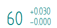
Center
Tolerance center-aligned with the dimension text.
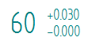
Top
Tolerance aligned to the top of the dimension text.
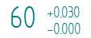
- Align to
-
Specifies how to align the upper tolerance value with the lower tolerance value. You can align them by the tolerance plus and minus signs or by the tolerance decimal point.
This option is available for all vertical tolerance text.
- Use tolerance text size for combined tolerance text values
-
When upper and lower tolerance values are the same, specifies that the combined values are displayed using the tolerance text size entered in the Size box.
Example: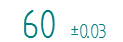
- Display degree symbol after numeric angular tolerance values
-
When units are set to degrees-minutes-seconds, specifies that the degree symbol ° is appended automatically to the angular tolerance value when it is displayed with an Angle Between dimension.
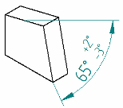
- Chamfer Dimension
-
Sets options for chamfer dimensions.
- Use 45 degree character
-
Enables display of the 45 degree character for parallel and perpendicular chamfer dimensions.
- Use lower case multiplication symbol "x"
-
Specifies the lowercase x as the multiplication symbol in chamfer dimensions.
- Inhibit display of 0.0 values for automatic fit tolerances
-
Specifies that a tolerance value of zero is not displayed for fit dimensions whose tolerance is automatically derived from one of the class fit ASCII text files.
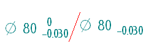
For more information, see Fit dimensions.
- Place prefix inside basic dimension box
-
Draws the basic dimension box around the prefix and the dimensional value text.
- Callout text aspect ratio
-
Specifies the default callout text width with respect to its height. Increasing or decreasing the aspect ratio only changes the font width; the height is unchanged.
Example: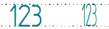
- Minimum aspect ratio
-
Specifies the minimum text width with respect to height. Use this to prevent the text from becoming too small when the aspect ratio is adjusted.
This option applies to annotations and table text which allow the text aspect ratio to adjust based on a given width.
Look up more details
Dimension Properties dialog boxGeneral tab (Dimension Style and Dimension Properties)
Units tab (Dimension Style and Dimension Properties)
Secondary Units tab (Dimension Style and Dimension Properties)
Lines and Coordinate tab (Dimension Style and Dimension Properties)
Spacing tab (Dimension Style and Dimension Properties)
Smart Depth tab (Dimension Style, Dimension Properties)
Terminator and Symbol tab (Dimension Style and Dimension Properties)
Annotation tab (Dimension Style and Dimension Properties)
Feature Callout tab